WEB · AI Agent
2026.02 — 개발 중, 1인in progress, solo
Pentest Agent for KR
주요정보통신기반시설 웹 취약점 점검 자동화 AgentAn agent that automates Korea's critical-infrastructure web vulnerability checklist
실무 모의해킹에서 수행하는 주요정보통신기반시설(주통) 체크리스트 점검을 LLM과 보안 도구로 자동화합니다. 주통 2026 웹 취약점 18개 항목을 기준으로 항목별 Sub-Agent가 병렬로 점검하고, 근거와 조치 권고가 담긴 보고서를 생성합니다.
Automates the critical-infrastructure checklist assessment used in real-world pentests, using LLMs and security tools. Against the 18 web items of the 2026 guide, per-item sub-agents run checks in parallel and produce a report with evidence and remediation advice.
- Tech
- TypeScriptNode.jsKali MCPRAGPlaywrightOWASP ZAPsqlmapdalfoxnmap
- Role
- Scope → Recon → Collect → Exploit → Report 5단계 파이프라인 설계 및 구현
- Designed and built the five-stage Scope → Recon → Collect → Exploit → Report pipeline
- Kali MCP 우선 + 로컬 CLI fallback 이중 경로로 10여 종 보안 도구 연동
- Integrated around ten security tools via Kali MCP with a local CLI fallback path
- 도구 결과와 HTTP 응답 본문을 함께 판정 근거로 남기는 evidence 포맷 표준화
- Standardized an evidence format that records both tool output and HTTP response bodies
- JSON 파일 기반 상태 관리로 재시작·복구·병렬 실행 지원
- JSON file-based state for restart, recovery, and parallel runs
- 현황Status
- 18개 항목 점검 분기 로직 반영, 로컬 테스트 타깃 기준 E2E 1회 완주 검증Branch logic for all 18 items implemented; one full end-to-end run verified against a local test target
